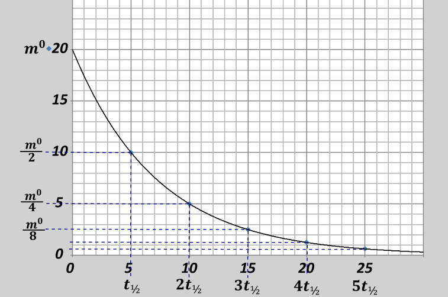
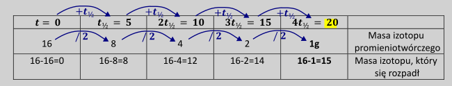
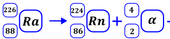
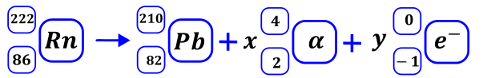

Kinetyka przemian promieniotwórczych mówi o szybkość zachodzenia reakcji promieniotwórczej i zawartości izotopów w badanej próbce po czasie. Wszystkie reakcje promieniotwórcze to reakcje zachodzące zgodnie z kinetyką pierwszego rzędu i dla osób, które mają opanowany ten temat lepiej jest rozumieć ten temat, jako przykład reakcji zachodzącej z kinetyką I rzędu.
Dla danej reakcji promieniotwórczej stałym parametrem jest czas połowicznego zaniku/ okres półtrwania \(t_{½}\) . Jest czas po którym zanika połowa ilości atomów (i innych rzeczy proporcjonalnych do ilości atomów takich jak mole i masa promieniotwórczego izotopu). Po upływie czasu równemu czasie połowicznego zaniku zostaje połowa ilości startowego izotopu promieniotwórczego. Po drugim czasie połowicznego zaniku mamy połowę połowy tegoż pierwiastka, czyli zostaje już ¼ wyjściowej ilości. Ilość promieniotwórczego izotopu w zależności od czasu możemy przedstawić wykresie. Na osy Y wykresu możemy również mieć inne wielkości proporcjonalne ilości takie jak np. masa, mole, sztuki atomów promieniotwórczych, również może to być stężenie molowe, pod warunkiem że objętość jest stała. Wykres ten zawsze ma taki sam kształt. Na osi y odkładamy tylko ilość danego izotopu promieniotwórczego, jeżeli mamy więcej niż jeden izotop promieniotwórczy to dla każdego robimy oddzielny wykres..
Mieliśmy na początku 20g \(t_{½} = 5dni\)

W zadaniach należy zwrócić uwagę na to, o który izotop nas pytają – czy ten, który powstał, czy też ten, który uległ rozpadowi, czy też ten, który pozostał – pilnujemy polecenia.
Obliczenia związane z kinetyką reakcji promieniotwórczych.
Wariant prostszy, nie wymagający skomplikowanych obliczeń - czas przemiany jest całkowitą wielokrotnością czasu połowicznego zaniku lub ilość pozostałego izotopu promieniotwórczego jest dokładnie równa początkowej ilości izotopu promieniotwórczego podzielonego przez potęgę 2.
Zadania tego typu najwygodniej jest zrobić tabelką gdzie w górnych wierszach piszemy kolejne całkowite wielokrotności czasu połowicznego zaniku, a w dolnej ilość izotopu pozostałego od po reakcji rozpadzie. Kolejne ilości tego izotopu po czasach uzyskujemy dzieląc poprzednią przez dwa. Oczywiście robimy tyle kolumn, ile mamy czasów połowicznego zaniku połowicznego zaniku do osiągnięcia warunków zadania. Oczywiście, jeżeli potrzebujemy, możemy w tabelce umieścić
Np. Jaka będzie masa izotopu promieniotwórczego \(Th - 228\) po 20 dniach, jeżeli \(t_{½\ } = 5dni\) , a próbka miała masę 20g, z czego 80% to był ten izotop.
Wpierw należy obliczyć ile mamy czystego promieniotwórczego toru w tej próbce, gdyż oczywiście zawsze liczymy na czystych masach / ilościach, zanieczyszczenia nie reagują.
\[\%_{Th} = \frac{m_{Th}^{czysty}}{m_{probki}}\]
\[80\% = \frac{m_{Th}^{czysty}}{20}\ 100\%\]
\[16 = m_{Th}^{czysty}\]
Masę izotopy, który uległ rozpadowi dla każdego czasu, możemy obliczyć, jako różnicę między ilością początkową i ilością izotopu, który pozostał.

Im większy okres półtrwania \(\mathbf{t}_{\mathbf{½\ }}\) tym bardziej stabilny izotop, tym wolniej się rozpada
Tak samo możemy robić, jeżeli znamy masę, która pozostała po pewnym czasie, uzupełniamy wówczas masy w drugą stronę.
W zadaniach możemy mieć problem rachunkowy związany z czasem, który nie będzie wielokrotnością całkowitą czasu połowicznego zaniku, bądź uzyskana masa jest wartością pomiędzy dwoma masami, które uzyskiwalibyśmy dla dwóch całkowitych wielokrotności czasu połowicznego zaniku.
Próbka promieniotwórcza o masie początkowej równej 20g; czas połowicznego zaniku wynosi \(\mathbf{t}_{\mathbf{½\ }} = 5dni\) . Jaką masę materiału promieniotwórczego mamy po siedmiu dniach.
| 0 dni | 5 dni | 10 dni |
|---|---|---|
| 20g | 10g | 5g |
No to po siedmiu dniach będziemy mieli coś między 10g a 5g, ale dokładnej wartości nie jesteśmy w stanie odczytać z tabelki. Mam do dyspozycji wówczas dwa warianty – zrobienie dokładnego wykresu i odczyt potrzebnej wartości z niego lub użycie wzorów.
Wybór opcji pierwszej wymaga zrobienia dobrego wykresu (Kartka w kratkę, zachowane kąty proste, linie od linijki, podziałki, minimalny format A5)
\[\]
Więc jednoznacznie widać, że powinno po 7dniach pozostać około 7.5 g. izotopu.
Metoda druga to użycie wzorów. Ilość atomów, ilość moli czy masę możemy opisać wzorami:
\[\mathbf{m}\left( \mathbf{t} \right)\mathbf{=}\mathbf{m}_{\mathbf{0}}\mathbf{2}^{\mathbf{-}\frac{\mathbf{t}}{\mathbf{t}_{\mathbf{½}}}}\mathbf{;\ \ \ \ \ }\mathbf{n}\left( \mathbf{t} \right)\mathbf{=}\mathbf{n}_{\mathbf{0}}\mathbf{2}^{\mathbf{-}\frac{\mathbf{t}}{\mathbf{t}_{\mathbf{½}}}}\mathbf{;\ \ \ \ \ \ N}\left( \mathbf{t} \right)\mathbf{=}\mathbf{N}_{\mathbf{0}}\mathbf{2}^{\mathbf{-}\frac{\mathbf{t}}{\mathbf{t}_{\mathbf{½}}}}\]
Gdzie \(m(t)\) to masa po czasie, \(m_{0}\) to masa początkowa, \(t\) czas przemiany promieniotwórczej natomiast \(t_{½}\) to czas połowicznego zaniku. Analogicznie \(n\) to mole reagenta promieniotwórczego przed i po reakcji, a N to ilość sztuk.
Dla naszego zadania masa początkowa to 20g, czas wynosi 7dni natomiast czas połowicznego zaniku to 5dni. Wstawiając to do równania i obliczając wartość dostajemy:
\[m(t) = 20·2^{- \frac{7}{5}} = 7.58g\]
Wzory te możemy przekształcić do postaci:
\[t = t_{½}\log_{2}{\frac{m_{0}}{m(t)};t = t_{½}\log_{2}{\frac{n_{0}}{n(t)};}t = t_{½}\log_{2}{\frac{N_{0}}{N(t)};}}\]
Jeżeli natomiast nie mamy kalkulatora naukowego z logarytmem o podstawie 2, możemy wykorzystać zależności związane z logarytmami, co prowadzi nas do wzorów
\[t = t_{½}\frac{\log_{10}\frac{m_{0}}{m(t)}}{\log_{10}2}{;t = t_{½}\frac{\log_{10}\frac{n_{0}}{n(t)}}{\log_{10}2}t = t_{½}\frac{\log_{10}\frac{N_{0}}{N(t)}}{\log_{10}2}}\]
Wzorów tych najwygodniej jest używać, aby obliczyć czasy mając dane masy przed i po reakcji promieniotwórczej.
Oblicz czas połowicznej przemiany \(t_{½}\) , jeżeli wiadomo, dla próbki o początkowej zawartości izotopu promieniotwórczego równej 9g po trzech dniach pozostały dwa gramy tegoż izotopu.
\[t = t_{½}\log_{2}{\frac{m_{0}}{m(t)};}\]
\[2 = t_{½}\log_{2}\frac{9}{2}\]
\[2 = t_{½}·2.17\]
\[t_{½} = 0.992dnia = 0.922·24 = 22h\]
Czyli czas połowicznego rozkładu wynosi 0.922 dnia czyli nieco ponad 22 godziny
Wiadomo że okres półtrwania pewnego promieniotwórczego izotopu wynosi 100 godzin. Oblicz jaką masę tego izotopu będziesz miał po 10 dniach, jeżeli jego masa początkowa wynosiła 20g.
W przypadku tego zadania najwygodniej jest się posługiwać wzorem, bo czas nie jest wielokrotnością czasu połowicznego zaniku. Alternatywnie należy zrobić wykres i z niego odczytać, ale jest to metoda bardziej mozolna. Należy jednocześnie posługiwać się jedną jednostką czasową, najwygodniej jest przekształcić dni na godziny.
\[10dni = 10·24 = 240\ h\]
\[m(t) = m_{0}2^{- \frac{t}{t_{\frac{1}{2}}}}\]
\[m(t) = 20·2^{\ ^{- \frac{240}{100}}} = 20·0.189 = 3.78g\]
Po 10 dniach pozostała 3.78 grama izotopu promieniotwórczego.
Reakcje promieniotwórcze traktujemy tak samo obliczeniowo jak reakcje chemiczne. Z uwagi na posługiwanie się konkretnymi izotopami wskazanymi w treści zadania należy posługiwać się ich masami z zapisanej reakcji promieniotwórczej, a nie średnią masą odczytywaną z układu okresowego; Czyli jeżeli w przemianie promieniotwórczej występuje izotop He-3 to jego masa molowa równa jest 3 a nie 4 (jak w układzie okresowym). Oczywiście zadania tego typu kurwa liczymy na molach 😉. Należy podkreślić, iż dla przemian promieniotwórczych, w których uwalniane są jądra pierwiastków, które są w stanie gazowym następuje zmiana masy próbki, gdyż pierwiastki te uciekają z próbki w postaci gazów. Szczególnie należy uważać na rozpad alfa, powstaje w nim jądro helu, jak wiemy jest to pierwiastek występujący w fazie gazowej.
Dla obu przemian beta możemy powiedzieć, że mas powstałego izotopu równa masie tego izotopu, który uległ przemianie, liczby masowe obu izotopów są sobie równe, np. rozpad beta minus jądra potasu -40 ma postać. \(\text{ }_{19}^{40}K \rightarrow_{20}^{40}Ca +_{- 1}^{0}e^{-}\) . Powoduje to, że masa całości próbki podczas przemian beta nie ulega praktycznie się nie zmienia.
Rozważmy zadanie związane ze zmianą masy podczas przemiany promieniotwórczej.
\[\ _{16}^{40}S \rightarrow_{2}^{4}He +_{14}^{36}{Si}\]
Próbka początkowo zawiera 30g siarki, z czego 80% jest promieniotwórcza, resztę stanowi stabliny izotop siarki – 32. Oblicz masę próbki i zawartość procentową siarki promieniotwórczej po 10 dniach, jeżeli czas połowicznego zaniku siarki – 40 wynosi 70 godzin. Jaka objętość helu powstała, zakładając warunki normalne?
Na początku obliczam masę obu izotopów siarki.
\[m_{S - 40}^{0} = 30·0.8 = 24g \rightarrow m_{S - 32} = 30 - 24 = 6g\]
Kolejno obliczam mole początkowe siarki promieniotwórczej, jako masę molową używając masę danego izotopu
\[n_{S - 40}^{0} = \frac{m}{M} = \frac{24}{40} = 0.6\]
Następnie mając mole początkowe siarki, czas trwania procesu i czas połowicznego rozpadu jestem w stanie obliczyć mole izotopu, który pozostał po 10 dniach. Oczywiście czas podany w dniach przeliczam na godziny, aby mieć te same jednostki czasowe.
\[n(t) = n_{0}2^{- \frac{t}{t_{\frac{1}{2}}}}\]
\[n(t) = 0.6·2^{- \frac{10·24}{70}} = 0.0557\]
Samą reakcję to możemy traktować, jako reakcje przerwaną, gdyż interesuje nas moment, w którym nie nastąpiła całkowita przemiana siarki.
| \[S - 40\] | \[Si - 36\] | \[He - 4\] | |
|---|---|---|---|
| \[n^{0}\] | \[0.6\] | ||
| \[dn\] | \[- x\] | \[+ x\] | \[+ x\] |
| \[n^{k}\] |
\[0.6 - x = 0.0557 \rightarrow\] \[x = 0.5443\] |
\[x = 0.5443\] | \[x = 0.5443\] |
Mając już zrobioną tabelkę z molami dla reakcji promieniotwórczej możemy obliczyć objętość wydzielonego wodoru, zgodnie z równaniem
\[V = nV_{mol} = 0.5443·22.4 = 12.19dm^{3}\]
Natomiast obliczenie masy całkowitej wymaga obliczenia mas poszczególnych pierwiastków po reakcji i ich zsumowania.
\[m_{k}^{S - 40} = 0.0557·40 = 2.228\]
\[m_{k}^{Si - 36} = 0.5443·36 = 19.5948\]
Oczywiście masa całej próbki to wszystkich mas pierwiastków, uwzględniając również izotop niepromieniotwórczy siarki.
\[m_{k}^{probki} = m_{k}^{Si - 36} + m_{k}^{S - 40} + m_{k}^{S - nprom} = 19.5948 + 2.228 + 6 = 27.8228\]
\[\%_{S - 40} = \frac{2.228}{27.8228} = 8\%\]
Cząstki α emitowane przez jądra wielu promieniotwórczych izotopów ulegają zobojętnieniu elektronami z otoczenia, co prowadzi do powstania gazowego helu. Jeżeli rozpad promieniotwórczy zachodzi w układzie zamkniętym, ilość helu otrzymanego w taki sposób jest proporcjonalna do liczby wyemitowanych cząstek α. Ta zależność stała się podstawą jednej z pierwszych metod wyznaczania stałej Avogadra. Zmierzono aktywność radu 226 Ra i stwierdzono, że 1,0 g tego izotopu w ciągu sekundy emituje 3,4 ⸱ 10 10 cząstek α, co powoduje jego przemianę w radon 222 Rn. Następnie z izotopu 222 Rn, w wyniku ciągu kilku szybkich przemian promieniotwórczych α i β – , powstaje ołów 210 Pb. Dalszy rozpad tego nuklidu nie wpływa na przebieg eksperymentu. Próbkę zawierającą 200 mg izotopu 226 Ra zamknięto na 80 dni (6 912 000 s) w zbiorniku i po tym czasie stwierdzono, że powstało 7,0 mm 3 helu (w przeliczeniu na warunki normalne). Można przyjąć, że aktywność radu 226 Ra była stała w czasie trwania eksperymentu.
Oblicz stałą Avogadra na podstawie danych z opisanego eksperymentu. Przedstaw tok rozumowania.
Zadanie rozpoczynamy od napisania reakcji przemian promieniotwórczych, początkowy rozpad radu możemy zapisać jako

Kolejne przekształcenia traktujemy jako przemiany szybkie, możemy ustalić ilość rozpadów alfa i beta postępując według opisanej wcześniej metody, wiedząc z jakiego jądra rozpoczynamy i na jakim kończymy:

Rozwiązując równania związane z bilansem masy i ładunku dostajemy
\[x = 3;y = 2\]
Powstały izotop radonu emituje trzy cząstki alfa i dwie cząstki beta, więc sumarycznie izotop radonu emituje cztery cząstki alfa w jednej reakcji promieniotwórczej, jedną w reakcji początkowej i kolejne trzy w szybkich reakcjach następczych. W zadaniu pytają nas o stałą Avogadra, oczywiście nie możemy jej wziąć z tablic ani z pamięci. Przekształcając jedyne równanie, które znamy związane ze stałą Avogadra otrzymuje
\[\ n = \frac{N}{N_{A}} \rightarrow N_{A} = \frac{N_{He}}{n_{He}}\]
Więc do obliczenia jej wartości potrzebuje \(N_{He}\) i \(n_{He}\) .Skąd je wziąć? Ilość moli jąder helu mogę obliczyć z zależności z praw gazowych:
\[n_{He} = \frac{V}{V_{mol}} = \frac{7·10^{- 6}}{22.4} = 0.3125·10^{- 6}\ mol\]
Trudniej natomiast jest znaleźć ilość sztuk tych atomów
Dla 1 sekundy mogę wiem, że gram radu emituje \(3.4·10^{10}\) cząsteczek alfa podczas reakcji rozpadu do radonu. Próbka waży 0.2 grama, więc emituje proporcjonalnie mniej.
\[1g - 3.4·10^{10}Cz\]
\[0.2g - N_{czastek}\]
\[N_{czastek} = 0.68·10^{10}\]
Dla 80dni mogę obliczyć ile powstaje cząstek alfa:
\[N_{czastek} = 0.68·10^{10}·6\ 912\ 000 = 0.68·10^{10}·6.912·10^{6} = 4.7·10^{16}\]
Wstawiając obliczone wartości do wzoru na stałą Avogadra otrzymuje
\[N_{A} = \frac{N}{n} = \frac{4.7·10^{16}}{0.3125·10^{- 6}\ } = 15.04·10^{22} = 1.504·10^{23}\]
Natomiast wiedzę że otrzymana wartość jest cztery razy mniejsza niż znana wartość stałej Avogadra \(6.02\hat{}10^{23}\) . Czyli gdzies ta 4 powinna być ukryta.
Jest ona ukryta w dalszym rozpadzie nuklidu, to całkowita reakcja to
\[\text{ }_{88}^{226}Ra \rightarrow_{82}^{210}Pb + 4_{2}^{4}He + 2_{- 1}^{0}e^{-}\]
Czyli jeden rad emituje nie jedna cząstkę a 4 cząstki łącznie, więc otrzymaną wartość sztuk cząstek należy przemnożyć razy cztery.
\[N_{A} = \frac{N}{n} = \frac{4·4.7·10^{16}}{0.3125·10^{- 6}\ } = 60.16·10^{22} = 6.02·10^{23}\]